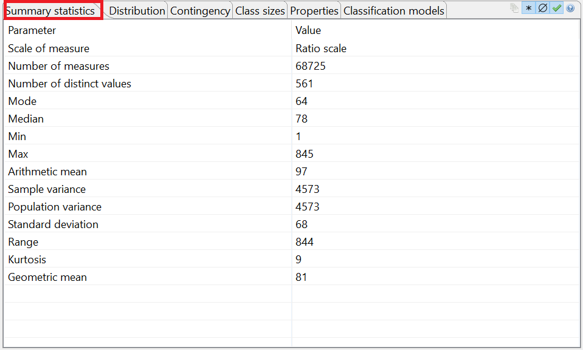

The first tab on the bottom of the utility analysis perspective shows summary statistics for the currently selected attribute.
The displayed parameters depend on the scale of measure of the variable. For attributes with a nominal scale, the following parameters will be provided:
For attributes with an ordinal scale, the following additional parameters will be displayed:
For attributes with an interval scale, the following additional parameters will be provided:
For attributes with a ratio scale, the following additional parameters will be displayed:
Note: These statistical parameters are calculated using list-wise deletion, which is a method for handling missing data. With this method, an entire record is excluded from analysis if any single value is missing. This behavior can be changed in the project settings.